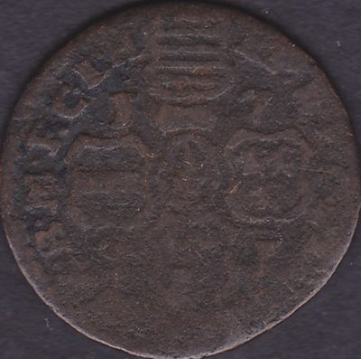

Home
Belgio
Stati Preunitari
Principato Vescovile di Liegi
Principato Vescovile di Liegi
Clicca sulle monete per vedere il retro
Principe-Vescovo Giovanni Teodoro di Baviera
1 Liard

1751
Home
Belgio
Stati Preunitari
Principato Vescovile di Liegi